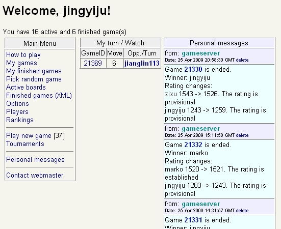
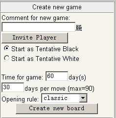
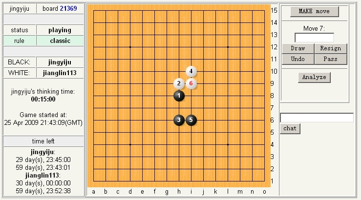

如何来玩俄罗斯慢棋
#1 如何来玩俄罗斯慢棋 作者：小丸.net 发表时间：2009-4-25 22:13:08
会下的，已经精通的，会玩的绕过，这不是写给你们看的。
很多朋友不知道俄罗斯慢棋怎么玩。我就写一个简单一点的吧。
OK，先下载客户端，ShowPost.asp?ThreadID=6633，下载完了以后注册，注册以后登录。如果你看不懂E文，请你回小学重修abcd。
登录以后看主界面：

左侧是菜单，分别是：
How to play:怎么来玩这个游戏
My Games 我的游戏
my finished games 我已经完成的游戏
pick random game 随机浏览一个游戏
active boards 好像是已激活的游戏，反正没啥用
Finished games(XML) 在这里可以下载到XML格式的棋谱，会用吗，不会用，回大学重修计算机。
options 这个不用解释了，设置
player 游戏者
rankings 等级排名
player new game 玩一个新游戏
tournaments 比赛区
personal message 短消息
contact webmaster 联系版主
OK，中间一块，是你的棋局列表（这里只显示你自己现在需要下的局面），右面一块是你收到的短消息
1.如何开始游戏？
点play new game,
可以看到左侧一个列表，这里就是等待加入的对局.
这时你要看Comment列,如果这列显示的是?/td>,那么，恭喜你，你可以加入这个局，怎么加入呢，点后面的JOIN就可以了。如果你想建立自己的游戏，

看列表的右侧，Invite PLAYER按扭是可以选择邀请对象的，如果不选择，任何人都可以加入你的局，下面的start as tentative Black 和start as tentative white是你选择假黑或者假白的，再下面是时间上面一格是总的时间，下面一格是每一步最长的时间，下面opening rule是选择规则的，仔细一看，没有RIF规则，大家不要急，选择classic就是我们需要的RIF规则。
2.如果游戏？
OK，我们建立了几个游戏，又有人来加入了，怎么来下呢，回到首页，看到中间有你轮到的局面，点击局面ID进入：

左侧显示的是一些信息，中间是棋盘，右面是操作内容，其中：DRAW是提和，RESIGN是投子认负，Undo是重做，pass这个规则上有的，analyze是研究的意思，如果你不确定下那个子，那么，你点一下analyze就可以像打谱一样在盘面上演示了，演示完了，点back,然后在盘面上下一个子（五手两打时要下两个），下完以后一点要点最上面的MAKE move(把第二个M看成L的面壁思过)，有时这个make move是submit是那开局的时候，有的时候是change,那是三手交换，这样才表示你已经确认下这个子了，OK，子下完了，等你的对手下吧。
其实就这么点东西。大家一起来玩吧，我的ID是jingyiju欢迎切蹉。不过揍我的话，不要打脸。
［ 潇洒 于 2009-4-25 22:17:33 时奖励此帖[金币加 20 威望加1］
#2 Re:如何来玩俄罗斯慢棋 作者：永不放弃 发表时间：2009-4-25 22:21:11
哈哈，丸子，我下第6手时没有MAKE move的，只有SUBMIT和Reset这两个，是不是第六手是不能研究的？
别的我就没有疑问了！
#3 Re:如何来玩俄罗斯慢棋 作者：小丸.net 发表时间：2009-4-25 22:23:12
应该是吧。五手两打去掉一个点还用研究吧。直接把最强的拿就就成了。#4 Re:如何来玩俄罗斯慢棋 作者：淡红的秋樱 发表时间：2009-4-26 17:32:56
sumbit 是提交的意思。reset是重新设置的意思。也就是把上面的棋子都拿掉，你重新下这一步。#5 Re:如何来玩俄罗斯慢棋 作者：极地剑客 发表时间：2009-4-28 12:19:17
XML棋谱怎么看噢?确实不知道噢~#6 Re:如何来玩俄罗斯慢棋 作者：极地剑客 发表时间：2009-4-28 12:24:00
记得以前RN也发布过XML的~直接改成LIB就可以了~这个好象不可以噢
#7 Re:如何来玩俄罗斯慢棋 作者：淡红的秋樱 发表时间：2009-4-28 12:30:49
关于finish games（xml），可以由Renju_Offline_3.70_+_DataBase_2009.03.24 导入，下载参考下文。
melman的签名档里面也有。
| HELLO! I OFFER PROGRAM RenjuOff.exe ver.3.70 for ALL players RENJU for VIEWING of databases from 900000 games. Has not had time to finish version 3.8 because of new games on a site... But if you do not update file GAMES.XML load new file RenjuOff_3.70_2009.04.21+880000games.rar or RenjuOff_3.70_2009.04.21.rar under the reference: http://www.liveinternet.ru/users/c-a-m-a-p-a/post94992814/ Because each database in my program dies in 31 day after its occurrence. ================================================== 湾 篑镥?玎觐眵栩?忮瘃棹 3.8 桤-玎 眍恹?桡?磬 襦轵?.. 皖 羼腓 螓 襦?礤 钺眍怆屮?羿殡 GAMES.XML, 蝾 耜圜桠嚅 眍恹?羿殡 RenjuOff_3.70_2009.04.21+880000games.rar 桦?RenjuOff_3.70_2009.04.21.rar 镱 耨腙: http://www.liveinternet.ru/users/c-a-m-a-p-a/post94992814/ 项蝾祗, 黩?赅驿? 徉玎 溧眄 ?祛彘 镳钽疣祆?箪桊噱? 麇疱?31 溴睃 镱耠?邋 镱怆屙?. |
［ 有志青年 于 2009-4-28 12:46:08 时奖励此帖[金币加 20 威望加1］
#8 Re:如何来玩俄罗斯慢棋 作者：lijeki 发表时间：2009-5-21 16:18:25
Renju_Offline_3.70_+_DataBase_2009.03.24 这个软件在哪里可以下载?